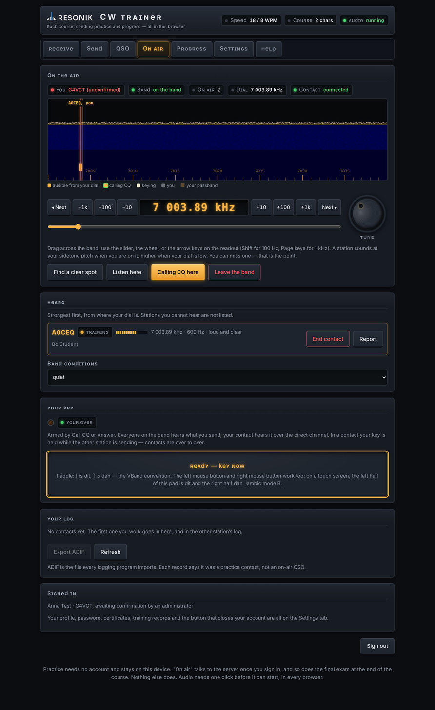
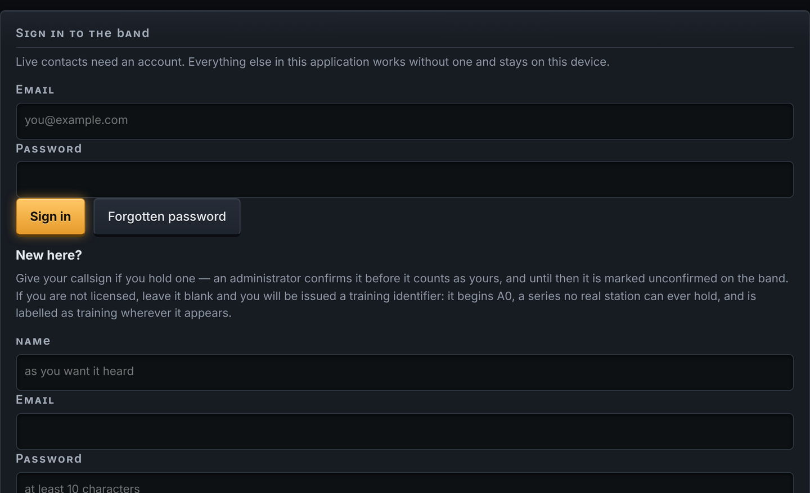
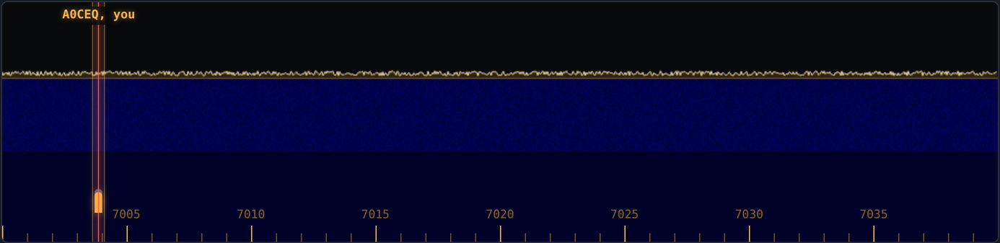
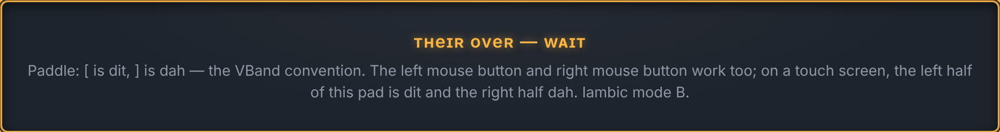

Contents
- 1Welcome
- 2Getting started in five minutes
- 3The Receive tab — learning to copy
- 4Finishing the course — the final exam and the certificate
- 5The Send tab — keying practice
- 6The QSO tab — a contact with a simulated operator
- 7The On air tab — working other members
- 8The Progress tab
- 9The Settings tab
- 10Operating reference
- 11When something is not working
- 12Glossary
Chapter 7The On air tab — working other members
This is the virtual band. You will not pick a member from a list. You will pick a frequency, and so will everyone else; tuning across the band you will hear signals arrive, rise to their proper pitch, and fade away again as you tune past — which means you can miss someone, exactly as on the air. Contacts are worked with your own key, live, and go into both stations’ logs.


7.1Signing in and creating an account


Live contacts need an account: a name (as you want it heard), an email address and a password of at least ten characters, plus your callsign if you hold one. Your password is never stored, only a one-way hash of it. A forgotten one is replaced through Forgotten password: a link is sent to your email that works once and for one hour.
Look in your spam or junk folder before asking for another. The server sends from an address you have never written to, and some providers file a first message from one there; marking it as not spam keeps the next one in your inbox. The link works once and for one hour, so if an older one has expired, ask for a fresh one from Forgotten password rather than following the old mail.
If you are not licensed yet
Leave the callsign blank. You will be given a training identifier that looks like a callsign so that copying it is the same exercise, but that no real station anywhere can ever hold: it begins A0, a series the ITU never issues, followed by your initials where they are free — so Anna Maria Rossi would be A0AMR. It is labelled “training” wherever it appears, contacts made under one are kept out of the ADIF export so nobody uploads practice to a real award by accident, and when you pass your licence your real callsign is added beside it.
Confirmation of your callsign
A callsign you claim is confirmed by an administrator before it counts as yours. Until then you can practise and go on the band, but your callsign is marked unconfirmed wherever it appears and no contact with you is exportable — so nobody can appear in another member’s log as an operator they are not. A training identifier needs no confirmation; the application issued it.
If you sign in from a second device, the first is signed off the band — you cannot be on frequency twice. Nothing about your account is shared with anyone else, and the only web page allowed to talk to the server is this one.
7.2The status lamps
The row of badges at the top of the panel is your rig’s status line. Each has a lamp: amber for you, green for good, grey for off, red for a problem.
7.3The band scope and waterfall


The band scope is the band, 7 000 to 7 040 kHz, drawn as an SDR draws it: a spectrum along the top and a waterfall beneath, scrolling down at a steady rate. A station shows as a peak on the spectrum and a bright trace on the waterfall only while its key is down, so you see the dits and dahs go by. The display shows the code being sent, not a carrier that never moves — a fake carrier would teach you to trust a picture over your ears. The noise floor rises and falls with the band conditions you choose.
Each station carries its callsign above the glass. Amber means you can hear it from where your dial is; a green ring means it is calling CQ; the red line is your dial and the lighter strip either side of it is your receiver passband. Stations on or near the same frequency share one label — the strongest two by name and “+3” for the rest, as a pile-up — and the Heard list below names them all.
- Drag across the glass to tune; the dial follows your finger or pointer.
- Press a station’s marker to land exactly on it.
- The legend under the glass names every colour used.
7.4The VFO: readout, knob and buttons


The tuning knob beside the readout is the VFO. Drag round it and the dial follows the angle of your finger or pointer: one full turn is exactly 1 kHz, in a hundred 10 Hz detents, which is the feel of a modern rig at its fine step. The mouse wheel over the knob steps it too, as do the arrow keys when it has focus; hold Shift for 100 Hz steps and use Page Up / Page Down for 1 kHz.
Use the Next buttons to hop from signal to signal along the scope, then the knob for the last few hertz. A station sounds at your sidetone pitch when you are tuned exactly onto it, higher when your dial is low, lower when it is high. Getting a station to sound right is zero-beating, and it is the skill this interface exists to teach.
7.5The Heard list

Heard lists what is audible from where your dial is, loudest first, each with a signal bar (an S-meter), its frequency, the pitch it sounds at for you, and a plain-words report such as “loud and clear”. A station too weak or too far off your dial is simply not there, as on the air. Under the callsign is whatever the station put in its profile — name, QTH, rig — as it would send it in the exchange.
The link line under a station you are in contact with tells you what the connection is doing: how many key movements arrived, how many were late, and the delay in use. It turns red when the delay reaches half a second or packets went missing. That is your network or theirs, in those words — never dressed up as poor conditions or left to look like bad sending.
Band conditions
The Band conditions choice under the Heard list puts the same noise floor and static under every station you hear, through the same receiver filter, so a contact is worked in noise rather than in a silent room. The fading (QSB) of the preset rides on every station, and the noise floor on the scope follows it. The stations themselves are at the level the Heard list shows for them.
7.6Calling CQ, and answering
To call
- Press Find a clear spot. The dial moves to a frequency with nobody near it.
- Press Call CQ here. Your key is armed, you are marked as calling (green ring on the scope), and the button reads “Calling CQ here”.
- Send
CQ CQ CQ DE <your call> <your call> Kon your key. Everyone on the band hears it at the pitch their own dial gives it. - When someone answers, the contact connects by itself: the Contact lamp goes “connecting…” then “connected”, and their station appears in Heard with End contact beside it.
To answer
- Find a station calling CQ — a green ring on the scope, or a row in Heard marked “calling CQ”. Press Tune to if you are not already on them.
- Press Answer. Your dial moves onto them, the direct connection is set up (a few seconds) and your key is armed.
- Send
<their call> DE <your call> <your call> K, then work them as you would on the air: report, name, QTH, and so on (Chapter 6 has the shape).
Listen here puts you on the band at your current frequency without calling — you hear everyone, and everyone can see you on the scope, but your key stays disarmed. End contact closes a contact; it goes into both logs at once. Leave the band takes you off the air: nobody hears you and you hear nobody until you come back.

7.7Your key, and over-to-over

The Your key panel is armed by Call CQ or Answer. Everyone on the band hears what you send; your contact hears it over the direct channel. The pad takes the same keys, mouse buttons and paddle as the Send tab, in the key type and iambic mode you set there.
Contacts are over to over. A fifth of a second or more of buffering makes true break-in impossible, so the application holds your key while the other station is sending and for two and a half seconds after their last element. The pad turns amber and says “Their over”, and the lamp beside it shows whose over it is. Keying during the hold makes no sound and sends nothing; that is not a fault, it is the other station still sending. When the hold lifts the pad reads “Ready — key now” and the badge reads “your over”.


On a phone or tablet


The key pad is your paddle: the left half is dit, the right half dah, and two thumbs squeeze exactly as two paddles do. In straight-key mode the whole pad is the key. The same pad works on the Send and QSO tabs.
7.8What travels between you, and the delay
Not audio. Your key-down and key-up times are sent, and the tone is generated again in the other member’s browser at whatever pitch they prefer. Nothing is compressed, so nothing is distorted, and the whole contact costs a few bytes a second.
Each side holds what arrives for about 200 ms before sounding it, which is what lets the timing be rebuilt exactly and gives late packets time to arrive. When one is still late, it is played the moment it comes — never thrown away, because a missing element would sound like a sending error — and the delay is grown so the ones behind it are on time. Between overs the delay shrinks back if it can. On a good connection it stays at 200 ms; on a phone on wifi it may settle at half a second or more, and the first over of a contact will sound rough while it learns.
On a wired connection, on home wifi, and between countries, the elements arrive exactly as sent — no error at all. On hotel wifi and on a phone they often do not arrive in time, and the application works around it as described. The link line in Heard shows you which case you are in. You should never be practising against a fist that the connection wrecked in transit.
Phones, screen locks and reconnecting
Phones drop the connection to the server when the screen locks or you switch apps. When you come back the application reconnects at once, puts you back on your frequency, and ends any contact you were in — the other station has been told you left — so just call or answer again. If the Band lamp says “reconnecting”, wait for “on the band” before keying. The application checks the connection every fifteen seconds and reconnects by itself if the server has gone quiet, so a station that has really gone disappears from everyone’s band within about half a minute.
7.9Your log, RST and ADIF export

Both sides get the contact in their log automatically the moment it ends; Your log lists them, newest first. Each row has three boxes for the exchange: the RST you sent, the RST you received, and a note. Type 5NN or 599, either is accepted; the value is saved when you leave the box. These are your own account of the contact; the other station keeps theirs.
Export ADIF downloads a file every logging program imports — one record per contact with the other station’s callsign, date and time in UTC, frequency, band, mode, and the RST and note if you wrote them. Refresh reloads the list from the server.
Two things are deliberate. A contact with a training identifier stays in your log but is never exported, because A0 is not a callsign and no logging program should be handed it as one. And every exported record says in its comment that it was a practice contact on this virtual band, not an on-air QSO, so a log merged with your real one still tells the truth about each row. Contacts with an unconfirmed callsign are likewise withheld until it is confirmed.
7.10Reporting a problem with another station
An administrator can monitor an active contact and can mute or remove a member. You can report abuse from inside a contact without leaving it first: Report on a station’s row asks what happened and sends it to the administrators together with a transcript of what that station sent, decoded by your browser as a machine would copy it. Nothing you sent is included, and no transcript is kept or shown at any other time — copying by ear is the point.
If an administrator has muted you, the You lamp and the key pad say so: “You are muted and cannot transmit at the moment.” A mute lasts 24 hours unless an administrator lifts it earlier.
7.11For administrators

A member whose role is administrator sees an extra tab, ADMIN, at the end of the tab bar. It appears when such a member signs in on the On air tab and goes again when they sign out; no other member ever sees it. It carries an administrator’s four actions and nothing more:
The line above the list counts members, not rows. A deleted account is not a member: the server empties the row and keeps it so that the moderation log and the contacts in other members’ logs still have something to point at. So three members and one deleted account read “3 members · 1 deleted”, and the deleted ones are folded away beneath the list, to be opened if you want to see them.
Every action asks for a reason and is logged with it. Deletion cannot be undone.
Hiding the tab from everyone else tidies the interface and protects nothing. The protection is the server, which refuses every administrator’s request from an account that is not an administrator’s, whether or not the tab is on screen.